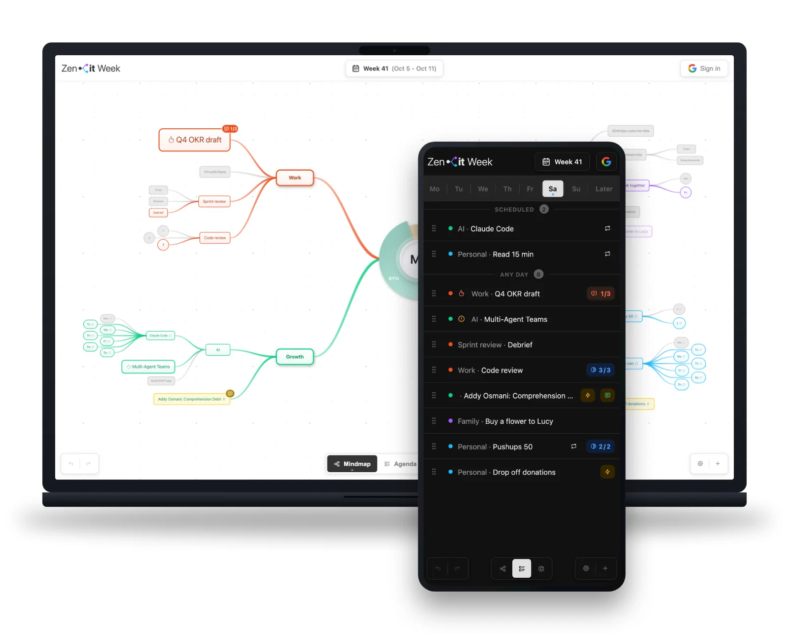
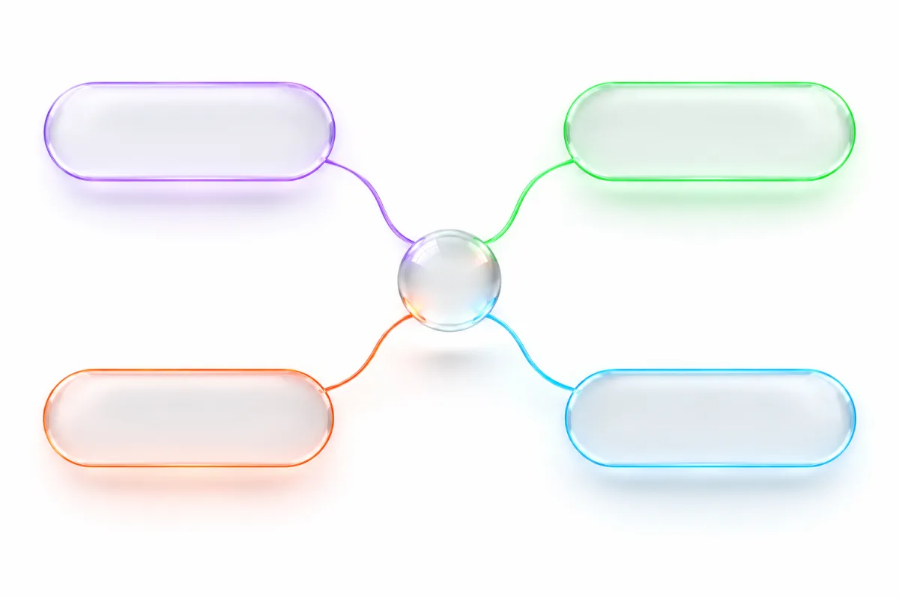
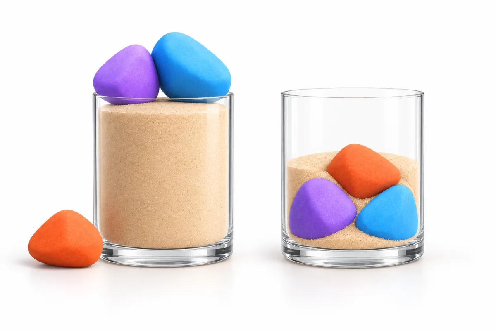

Vizuální týdenní plánovač
Týden ti zavalí maily a meetingy.
Na to důležité nezbude čas.
V myšlenkové mapě si nejdřív naplánuj hodnotnou práci, rodinu a koníčky.
Zbytek se vejde kolem.
Bez registrace. Bez instalace. Data zůstávají u tebe.

Problém
Máš dost času na to,
co je opravdu důležité?

pár minut denně? Být naplno
se svou rodinou? Promýšlet strategii
v klidu? Pečovat o svou
mysl i tělo? Ty Ty Učit se AI
pár minut denně? Být naplno
se svou rodinou? Pečovat o svou
mysl i tělo? Promýšlet strategii
v klidu?
Pravděpodobně ne.
Ne kvůli lenosti nebo nechuti.
Protože se ti kalendář zaplní dřív, než stihneš rozhodnout, co je nejdůležitější.
Sypeš do nádoby nejdřív písek

Nejdřív mailyNa to důležité nezbude místo
Nejdřív to důležitéMaily a meetingy se vejdou kolem
Existuje ukázka: nádobu nejdřív naplníš pískem a pak se snažíš vměstnat dovnitř velké kameny: rodinu, zdraví, růst, smysluplnou práci.
Nevejdou se.
Když to ale obrátíš a dáš kameny napřed, písek se kolem nich přirozeně usadí.
Většina z nás plánuje týden jako první nádobu. Maily, schůzky a drobné úkoly ji zaplní. Do čtvrtka už není místo na to, na čem doopravdy záleží.
Řešení
Tvůj týden jako myšlenková mapa
Zenit Week je online týdenní plánovač. Začni největšími kameny.
Rovnováhu, nebo její absenci, vidíš na první pohled.
Kameny napřed
Nejdřív to důležité, pak všechno ostatní.
Vidíš rovnováhu
Samá práce a nic pro sebe? Mapa to ukáže.
Data jsou tvoje
V prohlížeči nebo na Disku. Bez cookies.
Klíčové funkce
Co všechno umí
Vizuální mapa
Týden jako myšlenková mapa. Hned vidíš, kde máš moc a kde nic.
Agenda
Úkoly po dnech: zpožděné, naplánované i hotové.
Statistika
Kolik z plánu se splnilo a kam ti čas skutečně jde.
Kouzelné selektory
Napiš 10x pro počítadlo nebo (po, st, pá) pro dny.
Priority
Normální, vysoká, kritická. Hned vidíš, na čem záleží.
Nedokončené → další týden
Rozpracované úkoly přeneseš jedním kliknutím.
Opakované úkoly
Označíš jednou a každý týden je máš připravené.
Synchronizace zařízení
Volitelně přes tvůj Google Disk. Naše servery data nevidí.
Vždycky po ruce
Napadne tě úkol? Rychlým přidáním ho v telefonu uložíš hned.
Klávesové zkratky
Na počítači plánuješ rychleji díky zkratkám.
10 minut na začátku týdne.
Po zbytek týdne víš, na čem záleží.
Stačí krátký rituál na začátku týdne. Nejdřív velké kameny, zbytek se vejde kolem.
Naplánovat tento týdenBez registrace. Bez instalace. Data zůstávají u tebe.